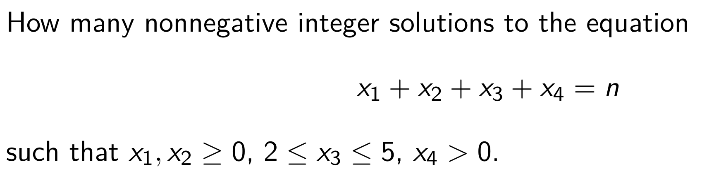

In RC4, we will go over all contents in Part 2, i.e Counting Problem. We will first talk about formal power series，and then with this powerful weapon we can work on more difficult problems. This part can be kind of hard from the perspective of calculation. So please make sure write as many steps as you can.
Formal Power Series
Definition: A formal power series is an expression A(x)=n≥0∑anxn
which is called the generating function of the sequence (an)n∈N.
x is usually called the variable or indeterminate.
x is identified with the sequence (0,1,0,0,…).
"Symbolically"a0=A(0).
We can extract the scalar coefficients as [xn]A(x)=an.
In general, the scalar coefficients could be taken as elements of an arbitrary ring R, we write A(x)∈R[[x]].
Properties
Equality
Addition
commutative
associative
additive identity
additive inverse
Multiplication
commutative
associative
multiplicative identity
Distributivity
Details are omitted so that it can force you to go over slides!
Invertibility
A formal power seriesA(x) is invertible if there exists B(x) such that A(x)B(x)=1.
if A(0)=0, then A(x) is invertible.
Composition of Formal Power Series
Let A(x) and B(x) be formal power series. If a0=0 or B(x) is a polynomial, then the composition is given by:
(B∘A)(x)=B(A(x))=n≥0∑bnA(x)n
Derivative
Let A(x)=∑n≥0anxn be a formal power series, then the formal derivative of A(x) is given by DA(x)=n≥0∑nanxn−1=n≥0∑(n+1)an+1xn
A Few Properties
Given A(x) and B(x) as formal power series, then:
D(αA+βB)=αDA+βDB, where α,β are scalars
D(AB)=(DA)B+A(DB)
D(B∘A)=(DB∘A)(DA), given a0=0, or B(x) is a polynomial
D(1/A)=−DA/A2, given a0=0
D(An)=nAn−1(DA)
Linear Recurrence
You may well be asked to solve linear recurrences using the method of generating functions in the exam. Follow these steps:
DefineA(x)=∑n≥0anxn
Sum up both sides of the recurrences, and substitute the sums with A(x).
Use partial fractions to split the expression. Then use binomial theorem or other techniques to expand it.
Extract the n-th term of A(x).
Partial Fraction
A Complete Example
E.g. an+2−4an+1+3an=n⋅2n
I will lead you to solve this problem to see how our method works.
Binomial Theorem
The key of this part is interchanging order and calculation.
Let m∈Q, k∈N, define (0m):=1,
and (km):=k!m(m−1)⋯(m−k+1).
Note that if m∈N, then (km)=k!(m−k)!m!.
Important Identity
(1+x)−d=n≥0∑(n−d)xn=n≥0∑(−1)n(nd+n−1)xn
(1−x)−d=n≥0∑(n−d)(−x)n=n≥0∑(nd+n−1)xn
(1+x)n=k≥0∑(kn)xk=k=0∑n(kn)xkif n∈N
(1−x)k+1xk=n≥0∑(kn)xn=n≥k∑(kn)xn
You should remember them well.
Multinominal
Catalan Number
Cn=(n2n)⋅n+11
How to Calculate Catalan Number
See Segner’s recurrence relation.
Tewlvefold Problem
Kind of important. You'd better remember them.
Principle of Inclusion-Exclusion
We will first introduce the general solution to Counting Problem.
General Solution

PIE
Let A1,…,An be subsets of X. Then the number of elements of X which lie in none of the subsets Ai is
The number of derangements of the set [n] is given by
dn=i=0∑n(−1)i(in)(n−i)!=n!i=0∑ni!(−1)i.
Counting Surjection
Let k≥n. The number of surjections f:[k]→[n] is given by
Sk,n=i=0∑n−1(−1)i(in)(n−i)k.
Asymptotic Notation
Big O
A function g(n) is an asymptotic upper bound for f(n), denoted by
f(n)=O(g(n))
if there exist positive constants c and n0 such that
0≤f(n)≤cg(n)for all n≥n0,
i.e.,
n→∞limsupg(n)f(n)<∞.
Omega
A function g(n) is an asymptotic lower bound for f(n), denoted by
f(n)=Ω(g(n))
if there exist positive constants c and n0 such that
0≤cg(n)≤f(n)for all n≥n0,
i.e.,
n→∞liminfg(n)f(n)>0.
Theta
A function g(n) is an asymptotic tight bound for f(n), denoted by
f(n)=Θ(g(n))
if there exist constants c1, c2, and n0 such that
0≤c1g(n)≤f(n)≤c2g(n)for all n≥n0.
Master Theorem
If T(n)=aT(bn)+f(n) (for constants a≥1,b>1), then:
T(n)=Θ(nlogba) if f(n)=O(nlogba−ϵ) for some constant ϵ>0.
T(n)=Θ(nlogbalgn) if f(n)=Θ(nlogba).
T(n)=Θ(f(n)), if f(n)=Ω(nlogba+ϵ) for some constant ϵ>0,
and if af(bn)≤cf(n) for some constant c<1 and all sufficiently large n
(regularity condition).